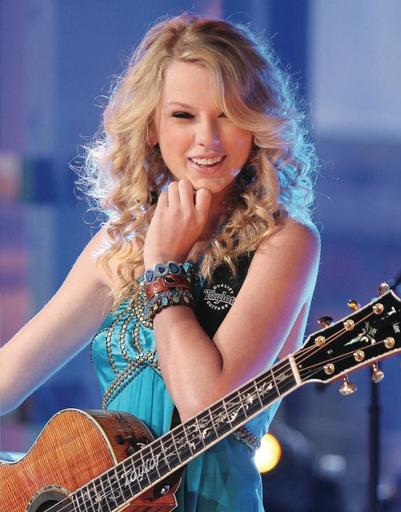
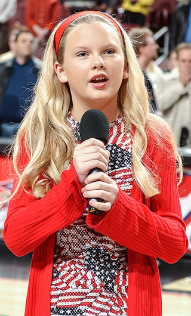
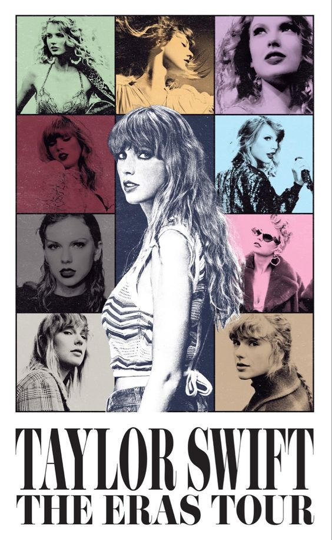
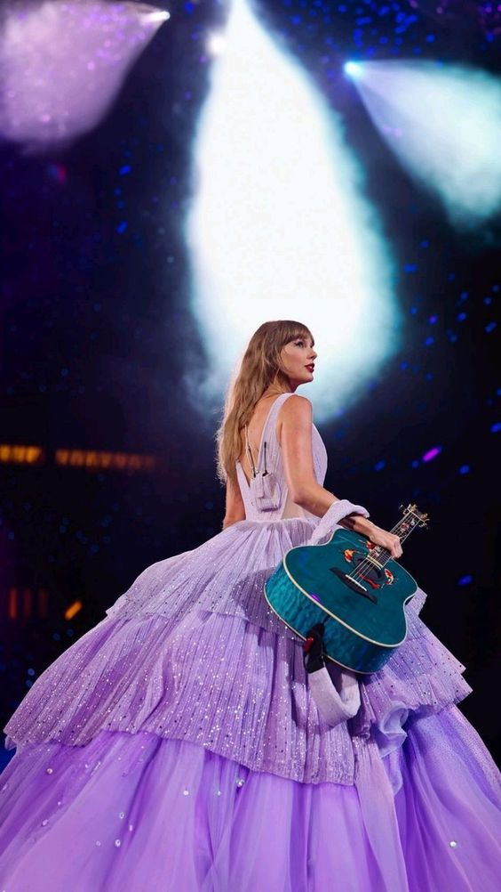

Taylor Alison Swift  Taylor Alison Swift, conocida como Taylor Swift, nació un 13 de diciembre de 1989 en West Pensilvania (Estados Unidos) a las 20:46. Taylor comenzó a escribir sus propias canciones a los 14 años. Se mudó a Nashville (tenesse) y firmó con la discográfica Big Machine Records en 2005 para convertirse en cantante de Country, siendo la artista más joven contratada por Sony Music. En 2006, cuando Taylor tenía 17 años, debutó con su álbum "Taylor Swift" muchos adolescentes se identificaban con ella en sus canciones, ya que tiene la habilidad de encajar palabras correctas en sus canciones para transmitir sentimientos, así mismo, los grandes conciertos y el reconocimiento llegó a ella. Intrumentos que toca:
Banjo Guitarra Piano Ukelele Guitarra eléctrica A los 9 años, Taylor ya se interesó por el teatro musical y empezó a participar en obras de teatro y tomr clases en Broadway
Es la primera artista femenina en llegar a los 100 millones de oyentes mensules en Spotify. Además se convirtió en la primera artista en ocupar los 10 primeros puestos del ranking Billboard. Cabe destacar que la Película del Eras tour se coronó como la película de concierto más taquillera, recaudando 249 millones de dólares a nivel mundial.  Top 3 Éxitos de Taylor Swift: 
- Love Story
- Blank Spce
- Shake It Off